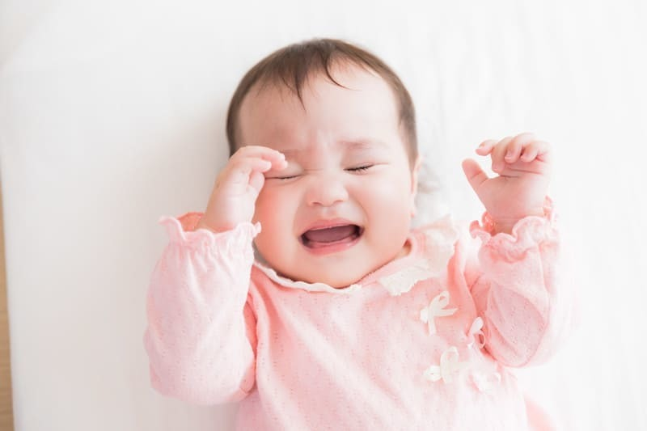
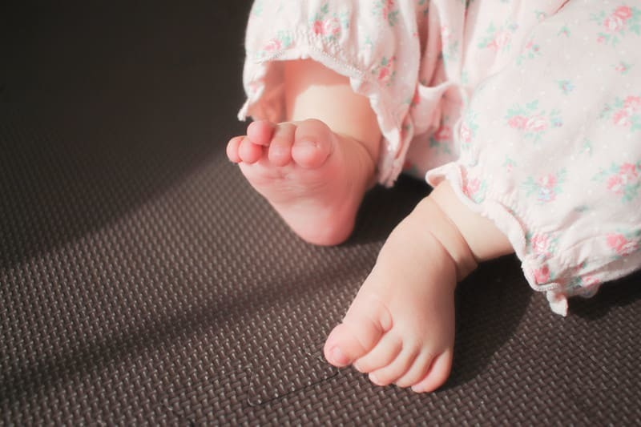

ウルリッヒ病の鍼灸
コラーゲンVI異常による先天性筋ジストロフィー。専門医のリハビリや呼吸・感染管理を最優先に、安定期の穏やかな補完ケアを行います。
まず知っておきたい要点と施術方針
細胞外マトリックスを構成するコラーゲンVIの遺伝子変異（常染色体潜性遺伝または新生突然変異）により発症する先天性筋ジストロフィーで、日本では福山型に次いで多く見られます。出生時からの筋緊張低下・筋力低下に加え、肘や膝など近位関節の拘縮と手首・手指など遠位関節の過伸展、先天性股関節脱臼を特徴とし、進行に伴い歩行困難、側弯症、思春期以降の呼吸不全を生じることがあります。（公式解説）
このようなお悩みはありませんか？
- ✓出生時から筋力低下や体のやわらかさ、哺乳・呼吸の弱さがある
- ✓肘や膝の関節が硬くなりやすく手首や指先は逆に過度に柔らかい
- ✓運動発達の遅れや側弯、将来的な呼吸筋の弱さが心配
- ✓肺炎予防や日々のリハビリ・介助を続けるご家族の負担が大きい
当院の施術アプローチ
院長YouTube解説・関連動画
ウルリッヒ病の症状は、生まれた時から力が弱いことなど

ウルリッヒ病の症状は、生まれた時から力が弱いことや肘や膝の関節が固くなりあまり動かすことができないこと、手首や手指の関節が異常に柔らかいことなどです。
力の弱さによって、泣き声の弱さや哺乳力の弱さ、上手に呼吸ができないことなどの症状も現れます。さらに、多くの場合、お腹の中にいる段階で胎動が少ないです。他にも先天性股関節脱臼や踵骨突出などが見られることもあります。
多くの場合で運動発達の遅れも見られます。症状の程度が重い場合は自分の力で歩くことができません。
自分の力で歩けていても10歳頃までに歩けなくなることが多く、10歳から20歳になると、側彎が起こったり呼吸に必要な筋肉が弱くなり人工呼吸器が必要になったりすることもあります。

ウルリッヒ病の根本的な改善方法はありません。関節が固くなったり、背骨の変形が進むことを防ぐことが大切になります。
そのため、できるだけ筋力を保つことを目的に早い段階からリハビリテーションを行います。足首の関節が固くなり歩きにくくなった場合や背骨が変形して呼吸が上手にできなくなった場合は手術を行うこともあります。
呼吸は生きていくために非常に大切です。そのため呼吸の能力を定期的に調べ、場合によっては人工呼吸器を使うこともあります。
ウルリッヒ病は、肺炎などの感染症に感染すると、急に状態が悪くなることもあります。
そのため、できるだけ感染症を防ぐことが大事です。ワクチンを摂取したり手洗いうがいをきちんと行なったりなるべく人混みは避けたりすることなどに注意して生活しましょう。

子供のお悩みのツボ図解とセルフケア
実際の施術ではお一人おひとりの体質・症状に合わせて選穴しますが、小児の補完ケア（刺さない小児鍼・夜尿症・小児喘息/アレルギー・悪心嘔吐）の臨床でよく用いられる代表的なツボの目安です。

📌 代表的なツボの詳細一覧表を開く（6穴） ▼
| ツボ名 | 位置の目安 | 主な狙い | セルフケアの注意点 |
|---|---|---|---|
| 身柱（しんちゅう） | 首を前に倒して出る背骨の出っ張りから3つ下 | 小児の自律神経調整・夜泣き・虚弱・喘息ケア | 背中を上から下へ優しく撫でるのみ。発熱時は控える |
| 中脘（ちゅうかん） | みぞおちとおへそのちょうど中間 | 胃腸機能・食欲不振・お腹の張り・吐き気ケア | 食直後は避け手のひらで時計回りに優しく撫でる |
| 関元（かんげん） | おへそから子どもの指3〜4本分ほど真下 | 下腹部・膀胱周囲の緊張緩和（夜尿症補完ケア） | 押さずに手のひらで温める程度。腹痛時は中止 |
| 内関（ないかん） | 手首内側横ジワから肘側へ子どもの指3本分 | 乗り物酔い・悪心嘔吐の緩和・落ち着きサポート | 軽くトントン触れるか指腹で数秒そっと押すのみ |
| 足三里（あしさんり） | 膝外側下のくぼみから子どもの指3〜4本分下 | 胃腸機能・免疫バランス・全身の体力サポート | 衣服の上から優しくさする（乳児の大泉門刺激は禁忌） |
| 三陰交（さんいんこう） | 内くるぶし頂点から子どもの指3〜4本分上 | 下半身の冷え・睡眠リズム・夜尿症補完サポート | 強く押さず温めながら撫でる程度 |
国際査読論文の科学的エビデンス
国際的な医学データベース（PubMed・Cochrane等）で報告されている小児の補完ケア（刺さない小児鍼・夜尿症・小児喘息/アレルギー・悪心嘔吐）領域の代表的な査読済み鍼灸研究をまとめています（標準治療との併用や研究上の限界を含めて正確に掲載）。
📚 査読論文データ・PubMed出典リンクを開く（4件） ▼
| 年・研究デザイン | 対象・規模 | 主な結果 | 限界・出典 |
|---|---|---|---|
| 2022年 メタ解析 | 小児夜尿症 13試験（n=890） | 非侵襲レーザー鍼（p=0.001）・灸（p=0.004）で改善児が有意増加。デスモプレシンとは完全治癒率差なし（p=0.57）。 | GRADE確実性は非常に低い。標準治療の補完ケア。 Explore (PMID: 34893441) |
| 2025年 メタ解析 | 小児喘息 16 RCTs（n=1,675・標準治療併用） | 鍼灸併用でFEV1pred%（MD 6.02, p=0.0128）・PEF（p=0.0019）が改善、IgE・IL-4・好酸球も有意低下。 | QOL（PAQLQ）は有意差なし、バイアス懸念あり。吸入薬継続必須。 Front Med (PMID: 40740962) |
| 2024年 メタ解析（TSA付） | 小児アレルギー性鼻炎 13 RCTs（n=1,186） | 鍼＋薬物併用は薬物単独より有効性優位（RR 1.29, p<0.00001）、再発率も低下（RR 0.40）。 | 鍼単独は薬物と差なし（p=0.13）。全体的な質は低い。 Int Forum Allergy Rhinol (PMID: 39017391) |
| 2016年 メタ解析 | 小児扁桃摘出術後嘔吐（PONV）8研究 | 内関（PC6）鍼刺激群で術後の悪心・嘔吐発生が有意に減少（RR 0.77, p<0.05）。 | 観察研究含む。急性嘔吐・脱水時は小児科受診最優先。 Laryngoscope (PMID: 26864736) |
参考文献・出典
- 銀座そうぜん鍼灸院「ウルリッヒ病の公式解説ページ」
- 2022年 メタ解析（小児夜尿症 13試験（n=890））— Explore (PMID: 34893441)
- 2025年 メタ解析（小児喘息 16 RCTs（n=1,675・標準治療併用））— Front Med (PMID: 40740962)
- 2024年 メタ解析（TSA付）（小児アレルギー性鼻炎 13 RCTs（n=1,186））— Int Forum Allergy Rhinol (PMID: 39017391)
- 2016年 メタ解析（小児扁桃摘出術後嘔吐（PONV）8研究）— Laryngoscope (PMID: 26864736)
よくある質問（FAQ）
Q. 関節の硬さや筋力低下を鍼灸で治せますか？▼
Q. 呼吸器を使用していても相談できますか？▼
あわせて読まれる関連疾患（子供のお悩み）
ムコ多糖を分解する酵素の先天性欠損によるライソゾーム病。専門医の酵素補充療法などを最優先に、安定期の穏やかな補完ケアを行います。
フクチン遺伝子変異による日本最多の先天性筋ジストロフィー。専門医の心肺・嚥下管理を最優先に、安定期の穏やかな補完ケアを行います。
髄鞘形成不全による小児の希少神経疾患群。専門医のリハビリや痙縮・嚥下管理を最優先に、安定期の穏やかな補完ケアとご家族支援を行います。
生後3か月以内に発症する重症の早期乳児てんかん性脳症。小児神経専門医の治療を絶対最優先に、安定期のご家族支援と穏やかなケアを行います。
腎尿細管と小腸での中性アミノ酸輸送障害による先天性代謝異常症。専門医のニコチン酸補充・栄養管理を最優先に、安定期の穏やかなケアを行います。
腸管でのトリプトファン吸収障害によりおむつが青く染まる希少な先天性代謝異常症。専門医の食事・腎管理を最優先に安定期のご家族支援を行います。
おひとりで悩まず、まずはご相談ください
銀座本院・川口・大宮・横浜・博多・田無の各院でご予約を承っております。